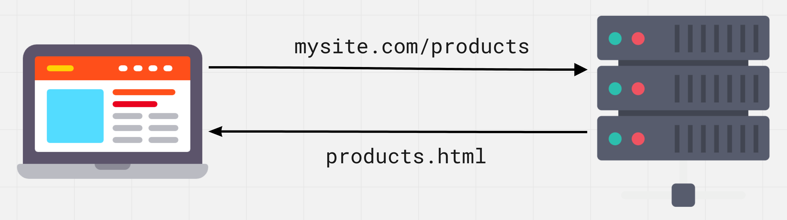

Zanim użytkownik zobaczy na ekranie zawartość strony, przeglądarka
wysyła do serwera żądanie otrzymania tej właśnie treści. Plik HTML,
obrazy, style i skrypty pochodzą z serwera za pośrednictwem
protokołu HTTP - zestawu reguł i konwencji wykorzystywanych podczas
przesyłania danych przez sieć.

HyperText Transfer Protocol (protokół przesyłania hipertekstu) jest
szeroko rozpowszechnionym protokołem przesyłania różnych typów
zasobów internetowych: html, css, javascript, obrazów, audio i wideo
itp.
HTTP bazuje na strukturze klient-serwer oraz modelu
żądanie-odpowiedź, w którym aplikacja kliencka inicjuje połączenie,
tworzy żądanie i wysyła je do serwera, po czym serwer przetwarza to
żądanie, generuje odpowiedź i odsyła ją do klienta. Komunikacja
między nimi odbywa się poprzez szereg naprzemiennych żądań HTTP i
odpowiedzi HTTP.
Żądanie odbywa się w kilku etapach:
Zapytanie DNS - wyszukiwanie najbliższego serwera DNS, aby
przetłumaczyć adres (na przykład google.com) na jego numeryczną
reprezentację, adres IP (74.125.87.99).
Połączenie - nawiązanie połączenia z serwerem z wykorzystaniem
otrzymanego adresu IP.
Wysyłanie danych - przekazywanie pakietów od klienta do serwera.
Oczekiwanie na odpowiedź - oczekiwanie na dotarcie pakietów danych
do serwera, serwer je przetworzy i odpowiedź wróci.
Odbieranie danych - pakiety dotarły, możesz odbierać z nich dane.
Protokół HTTPS
HyperText Transfer Protocol Secure to dodatek do protokołu HTTP, w
którym wszystkie wiadomości między klientem a serwerem są szyfrowane
w celu zwiększenia bezpieczeństwa. Zapewnia ochronę przed atakami
podsłuchowymi. Dane są przesyłane protokołami kryptograficznymi SSL
lub TLS.
Podczas komunikacji przez zwykłe połączenie HTTP wszystkie dane są
przesyłane w postaci tekstu i mogą być odczytane przez każdego, kto
uzyskał dostęp do połączenia między klientem a serwerem. Jeśli
użytkownicy robią zakupy online i wypełniają formularz zamówienia
zawierający informacje o karcie kredytowej, ich dane finansowe są
znacznie łatwiejsze do kradzieży, jeśli są przesyłane jako tekst.
Dzięki HTTPS dane zostaną zaszyfrowane i haker nie będzie mógł ich
odszyfrować, ponieważ odszyfrowanie wymaga dostępu do klucza
prywatnego przechowywanego na serwerze.
Protokół HTTPS zapewnia, że informacje o klientach, takie jak numery
kart kredytowych, są szyfrowane i nie można ich przechwycić w formie
odszyfrowanej. Odwiedzający mogą potwierdzić, że strona jest
bezpieczna, patrząc na ikonę po lewej stronie paska adresu,
zabezpieczone połączenia są oznaczone ikoną kłódki.
Serwer to komputer ze specjalnym oprogramowaniem. Backend to program
znajdujący się na serwerze, który może przetwarzać przychodzące
żądania HTTP i posiada zestaw gotowych akcji dla określonych żądań.
API (interfejs programowania aplikacji) - zestaw dobrze
zdefiniowanych reguł komunikacji pomiędzy różnymi komponentami
oprogramowania. Interfejs opisuje, o co możesz poprosić program i
jaki będzie wynik.
REST (representational state transfer) - to styl architektury
backendu oparty na zestawie zasad opisujących sposób definiowania i
adresowania zasobów sieciowych.
REST API - backend zbudowany na zasadzie REST. Służy jako warstwa
między aplikacją internetową a bazą danych. Posiada standardowy
interfejs dostępu do zasobów. Działa jak strona internetowa,
wysyłamy żądanie HTTP od klienta do serwera i w odpowiedzi zamiast
strony HTML otrzymujemy dane w formacie JSON.
Format żądania
Usługa REST wymaga od klienta złożenia żądania dodania, pobrania lub
zmodyfikowania danych. Żądanie może składać się z następujących
części.
Entry
Description
Metoda HTTP
Określa, jaką operację wykonać.
Nagłówki HTTP
Umożliwia klientowi przesyłanie informacji serwisowych
dotyczących żądania.
Ścieżka
Ścieżka do zasobu. Dostępne ścieżki są opisane w dokumentacji
backendu.
Ciało
Blok żądania zawierający dane.
Metody HTTP
Istnieje kilka podstawowych metod HTTP do pracy z usługą REST.
Method
Description
POST
Utwórz nowy zasób
GET
Uzyskaj zestaw zasobów lub jeden zasób
PUT
Zaktualizuj istniejący lub utwórz nowy zasób
PATCH
Zaktualizuj istniejący zasób
DELETE
Usuń zasób
Nagłówki HTTP
Nagłówki zawierają informacje serwisowe związane z treścią żądania.
Na przykład typ treści, którą klient może przetworzyć w odpowiedzi z
serwera (nagłówek Accept) lub opisujący typ zasobu, który klient
wysyła do serwera lub serwer wysyła do klienta (nagłówek
Content-Type).
Accept: text/html
Content-Type: application/json
Typy MIME - opcje typów treści. Używane do wskazania treści żądania
i odpowiedzi, składają się z typu i podtypu oddzielonych ukośnikiem
/. Na przykład plik tekstowy zawierający HTML zostanie opisany jako
typ text/html. Jeśli plik zawiera CSS, zostanie opisany jako
text/css. Dane JSON będą opisane jako application/json. Jeśli klient
oczekuje text/css, ale odbiera application/json, nie będzie w stanie
rozpoznać i przetworzyć treści odpowiedzi.
Ścieżki
Żądania muszą zawierać ścieżkę do zasobu, na którym wykonywana jest
operacja. Dostępne ścieżki (punkty końcowe, zasoby) są opisane w
dokumentacji backendu.
GET https://bookstore.com/api/orders
Accept: application/json
Taka ścieżka wyraźnie wskazuje zasób, nawet jeśli nigdy wcześniej go
nie widziałeś, ponieważ jest hierarchiczny i opisowy. Realizujemy
żądanie pobrania zbioru zamówień.
W celu uzyskania jednego elementu kolekcji do zasobu dodawany jest
jego identyfikator. Rozważmy żądanie odczytania jednego zamówienia o
identyfikatorze 289.
GET https://bookstore.com/api/orders/289
Accept: application/json
Ostatnia część ścieżki nazywana jest parametrem dynamicznym i jest
opisana w dokumentacji jako /zasób/:parametr. Zasób pozostaje
niezmieniony, jest to ścieżka do całej kolekcji, a wartość parametru
zmienia się dla każdego z jej elementów.
Kody odpowiedzi
Serwer wysyła odpowiedź na żądanie klienta, która zawiera kod
statusu informujący klienta o wyniku operacji. Kody podzielone są na
grupy.
Group
Description
1XX
W celach informacyjnych
2XX
Kody sukcesu
3XX
Opisują wszystko związane z przekierowaniem (redirect)
4XX
Wskazują błędy po stronie klientów
5XX
Wskazują błędy po stronie serwera
Nie trzeba pamiętać wszystkich kodów z każdej grupy, wystarczy znać
te najczęstsze. Resztę można zawsze znaleźć w odniesienie do kodów
HTTP.
Code
Description
200 (OK)
Standardowa odpowiedź na udane żądania HTTP.
201 (Created)
Standardowa odpowiedź na żądanie HTTP, które zakończyło się
pomyślnym utworzeniem zasobu.
400 (Bad Request)
Nie można przetworzyć żądania z powodu nieprawidłowej składni
żądania lub innego błędu klienta.
401 (Unauthorized)
Aby uzyskać dostęp do zasobu, wymagana jest autoryzacja.
403 (Forbidden)
Klient nie ma uprawnień dostępu do tego zasobu.
404 (Not Found)
W tej chwili nie znaleziono zasobu. Być może został usunięty
lub jeszcze nie istnieje.
500 (Internal Server Error)
Ogólna odpowiedź na nieoczekiwaną awarię serwera, chyba że
dostępne są bardziej szczegółowe informacje.
Żądanie-Odpowiedź
Załóżmy, że mamy aplikację, która umożliwia przeglądanie, tworzenie,
edytowanie i usuwanie klientów i zamówień z małej księgarni z
backendem hostowanym pod adresem bookstore.com/api. Wykorzystując
zdobytą wiedzę, za pomocą pseudokodu opisujemy proces
żądanie-odpowiedź do backendu.
Jeśli chcemy uzyskać dane o wszystkich klientach, żądanie GET będzie
wyglądać tak.
GET bookstore.com/api/customers
Accept: application/json
Na co serwer wyśle nam taką odpowiedź.
Status: 200 OK
Content-Type: application/json
Body: dane JSON dla wszystkich klientów
Aby otrzymać dane jednego klienta, wskazujemy jego identyfikator,
określając żądanie GET.
GET bookstore.com/api/customers/289
Accept: application/json
Na co serwer wyśle nam taką odpowiedź.
Status: 200 OK
Content-Type: application/json
Body: dane JSON o kliencie
W celu dodania nowego klienta wykonujemy żądanie POST.
AJAX (Asynchronous JavaScript and XML) - metoda ściągania lub
wysyłania danych, a następnie aktualizowania interfejsu o te dane,
bez konieczności przeładowywania strony. Skraca to czas odpowiedzi i
sprawia, że strona internetowa jest bardziej interaktywna. Proces
ten można zobaczyć na przykładzie ładowania danych.
Na stronie internetowej ma miejsce zdarzenie (strona ładuje się,
kliknięty jest przycisk "Pokaż więcej", przesyłany formularz
itp.).
Na kliencie za pomocą JavaScript w odpowiedzi na to zdarzenie
zostanie wykonana funkcja do pracy z serwerem, na którym tworzone
i wysyłane jest żądanie HTTP.
Serwer odbiera i przetwarza żądanie HTTP, odsyłając w odpowiedzi
dane w formacie JSON.
Na kliencie za pomocą JavaScript przetwarzana jest odpowiedź z
serwera, odczytywane są dane i aktualizowany interfejs.
Mimo to, że w nazwie technologii występuje XML, we współczesnej
sieci został zastąpiony przez JSON, a nazwę pozostawiono w hołdzie
pamięci. AJAX oznacza dowolną komunikację z serwerem bez
przeładowywania strony.
Fetch API
Zbudowany w przeglądarce interfejs dostępny w obiekcie window, który
zawiera zestaw właściwości i metod do wysyłania, odbierania i
przetwarzania zasobów z serwera. Metoda fetch() zapewnia nowoczesny
interfejs do wysyłania żądań do serwera i jest zbudowana na
obietnicach.
fetch(url, options)
url - ścieżka do danych na backendzie, które należy pobrać,
utworzyć lub zmodyfikować. Wymagany argument.
options - obiekt ustawień żądania: metoda (domyślnie GET),
nagłówki, ciało itp. Argument opcjonalny.
Będziemy robić żądania do
JSONPlaceholder API
- publicznego API REST do szybkiego prototypowania, który zapewnia
kolekcję fałszywych użytkowników w zasobie /users.
Wartość obietnicy, która zwraca metodę fetch(), to obiekt z
informacją serwisową o stanie odpowiedzi serwera. Instancja klasy
Response wyposażona w różne metody i właściwości. W zależności od
typu odbieranej zawartości używana jest inna metoda konwersji treści
odpowiedzi na dane.
json() - parsuje dane w formacie JSON.
text() - analizuje dane w formacie zwykłego tekstu, na przykład
.csv (dane tabelaryczne).
blob() - analizuje dane opisujące plik, takie jak obraz, audio lub
wideo.
Pierwsza metoda then() sprawdza status odpowiedzi i konwertuje dane
do prawidłowego formatu lub jawnie zgłasza błąd, żeby obsłużyć
nieudane żądanie HTTP w bloku catch().
fetch("https://jsonplaceholder.typicode.com/users")
.then(response => {
if (!response.ok) {
throw new Error(response.status);
}
return response.json();
})
.then(data => {
// Data handling
})
.catch(error => {
// Error handling
});
Jest to konieczne, aby fetch() poprawnie zareagowała na status kod
404, który technicznie nie jest błędem, ale nie jest pomyślnym
wynikiem dla klienta.
Karta Network
W narzędziach programistycznych karta Network wyświetla wszystkie
żądania HTTP wykonywane na stronie. Wybranie filtra XHR, spowoduje
pozostawienie tylko żądań do backendu. Po kliknięciu przycisku w
przykładzie, po chwili żądanie zostanie wyświetlone na liście.
Wybierając go, możesz wyświetlić informacje służbowe i treść
odpowiedzi na podkartach Headers, Preview i Response.
Praca z publicznym REST API
Każdy backend jest wyjątkowy, są ich tysiące. Z drugiej strony API
REST są zbudowane na standardowej architekturze. Oznacza to, że
możesz zrozumieć zasadę ich działania, po czym wystarczy zapoznać
się z dokumentacją backendu, którego potrzebujesz.
Kontynuujemy pracę z
JSONPlaceholder API. Z dokumentacji pobieramy adres URL zasobu, aby zażądać informacji
o zbiorze fałszywych użytkowników
https://jsonplaceholder.typicode.com/users
Ta ścieżka składa się z następujących części:
https://jsonplaceholder.typicode.com - to punkt końcowy,
podstawowy adres URL, punkt wejścia API.
/users - zasób, do którego uzyskujemy dostęp.
Klikając przycisk "Fetch users" wykonamy żądanie GET i na podstawie
otrzymanych danych renderujemy listę użytkowników.
Zauważ, że funkcja fetchUsers() zwraca obietnicę, więc do wyniku
wywołania dodajemy łańcuch metodthen() i catch().
Błąd początkującego
rzyjrzyjmy się częstym błędom podczas pracy z kodem asynchronicznym
- próbie użycia danych żądania HTTP poza wywołaniem zwrotnym metody
then(). Początkujący próbuje zapisać „wynik fetch" do zmiennej
zewnętrznej i użyć jej w dalszej części kodu natychmiast po
wywołaniu metody fetch().
let globalVariable; // undefined
// Initializing data fetching
fetch("https://jsonplaceholder.typicode.com/users")
.then(response => response.json())
.then(users => {
console.log("users inside then callback: ", users);
// Writing the result to a global variable
globalVariable = users;
// Everything is ok here, the data is in the variable
console.log("globalVariable inside fetch callback: ", globalVariable);
});
// No async data here
console.log("globalVariable outside fetch: ", globalVariable); // undefined
Poza wywołaniem zwrotnym metody then() nie ma danych, ponieważ
ostatni console.log() zostanie wykonany przed nadejściem odpowiedzi
z serwera. W tym czasie zmienna globalVariable nadal zawiera
undefined. Wartość spełnionej obietnicy jest dostępna tylko w
wywołaniu zwrotnym metody then().
Parametry ciągu zapytania
Parametry zapytania pozwalają określić dodatkowe kryteria dla
backendu. Na przykład, ile elementów kolekcji chcemy otrzymać w
żądaniu, być może musimy dodać sortowanie po jakiejś właściwości
obiektu, ograniczyć wybór itp. Lista parametrów zapytania, ich nazwy
i możliwe wartości zależą od backendu i są opisane w dokumentacji.
Znak ? wskazuje początek parametrów zapytania. Każdy parametr jest
parą nazwa=wartość. Znak & jest używany do wskazania znaczącego
„AND", oddzielając parametry w ciągu zapytania.
Takie żądanie GET zwróci tablicę siedmiu użytkowników (w sumie 10)
posortowanych według nazwy (pole name) w kolejności alfabetycznej.
Podkreślenia w nazwach parametrów są specyficzne dla tego backendu,
nie jest to jakiś standard.